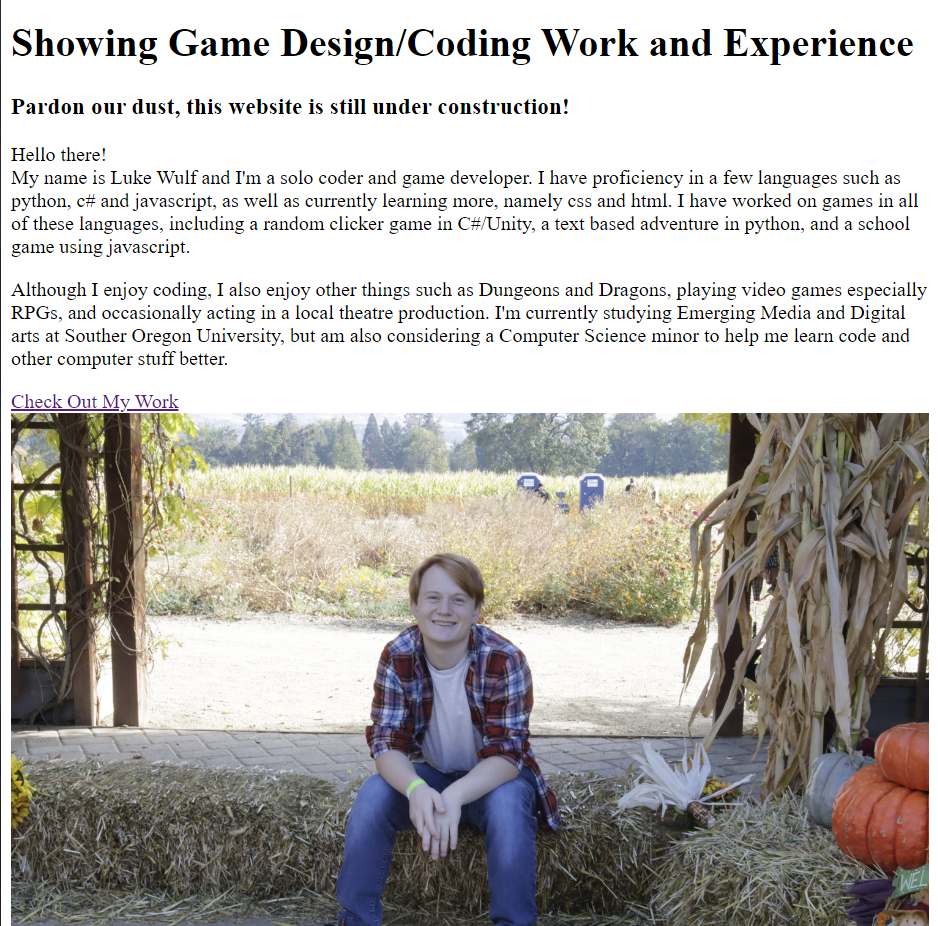

7/9/23
Game Update / Going Forward
The new game is coming along nicely! I've put in some work
for the basic parts of the game (map creation, player movement and
collisions) as well as continuing to work on pixel art for it! I was
also able to have Unity connect my controller so it will be able to
be used when playing this game.
In other news, I am going to try to update both the devlogs and my website
weekly again, hopefully on Sunday. So look forward to some more updates,
dad jokes, and other random stuff!
7/5/23
New Game Begins!

Since it's now summer time, I decided to start work on a new
game. My current idea is a rouge-lite (kinda like Hades) mixed with Stardew
Valley. You'll work on growing a garden in the Hub, while exploring a dungeon
to get seeds, materials, and other stuff. The plants you grow will be used to
help you grow more powerful in the game! For this game, I have two challenges.
1: Finish the game. I start things often but struggle finishing stuff.
2: Create my own art. I am chronically bad at art for my games, so I'm
working on creating all my own art for this game. It'll be in a 2D top-down
pixel art style, and my first draft of it is done! It's very basic, but I'm
proud of what I've done!
6/4/23
Updated Designs
Nearing the end of our class, we're supposed to have a full
website soon! I like where mine is, but I'd like to add some more things,
bother personally and as a part of my project. For this update, I added
an improved home screen, and moved info to a new about tab! I think this
making it better to look at over all. Along with that, I added a contact
me to the about page! There will be lots of little changes from here on out!
5/22/23
Mobile View!
We've been working on how to make our websites more friendly
for other devices, so I finally took some time and did some work on the
mobile version of the website! Luckily, it didn't take too much finagling.
There are still a few things that are iffy, but over all, I'm really
happy with it!
5/6/23
Minor Changes to Website
Currently, we've been learning how to add in some 3D elements to our website
and I really liked this! Since this websites inception, I've wanted to add a shadow to the
header text at the top of the website and I finally have! Along with this I've added some
box shadows on the photo in the home page as well as each card in the works page. I think
it gives it a Si-Fi look and I like it, although it might change soon. In other news, I think
the works page might look better with some rearranging of the elements, so look forward to that
soon!
4/30/23
Dad Joke of the Week
I basically went ahead of what I was supposed to do for our Milestone
2 assignment, so for the Milestone 3 assignment, we need to add horizontal navigation
bars...which I already have. So instead I decided to add something to the final tab.
This used to be the about tab, which I might add in later, but I changed it to Dad Joke
of the Week (DJoW). I really like dad jokes and I want to share it with everyone. So
tun in every so often, I'll try and change it regularly on Sundays!
4/22/23
Works Page Creation
Lots of work on the website this weekend! Guess I've just been
a bit hyper-fixated. I created and styled the page containing all the games
I have finished and have published on itch.io. At some point in the future, I
want to add some of the projects I'm currently working on and create devlogs
for that as well.
4/20/23
Website Redesign
For our assignment in Web Development, we were supposed to
add some style to our websites, but I think I took it a bit far.
I added in some more colors, specifically blue and orange, but also
a new font! I really like how it meshes with the black on dark gray
on black of the background. A lot of work still needs to be done, for
example an actual color pallette, but I think I've built a solid foundation so far!
4/6/23
Website is Live!

This marks the first day that this website is live!
Although this is being developed as a homework assignment for web
development class I'm taking, I hope that in the future I'll be able
to use it as a portfolio, as well as a way to inform people about
my works! These devlogs will serve as the history of development, on
both this website and other works!